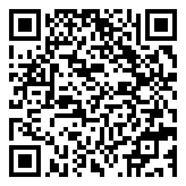

🗣️
Lengua e identidad
Promover espacios donde las lenguas y los saberes de los pueblos y nacionalidades tengan presencia real en los procesos educativos.
Mi trabajo parte de una convicción: la educación intercultural bilingüe debe vincular aprendizaje, lengua, cultura, territorio y participación comunitaria, con una gestión que acompañe a las instituciones y no se limite a la administración.
Entiendo la educación como un proceso que reconoce a cada estudiante dentro de una historia, una lengua y una comunidad. En la Educación Intercultural Bilingüe, la pertinencia cultural no es un elemento adicional: orienta la manera de enseñar, aprender, organizar la institución y relacionarse con el territorio.
Desde la dirección zonal, mi responsabilidad es acompañar a las instituciones, fortalecer los procesos pedagógicos y de gestión, promover el cumplimiento de las políticas de EIB y favorecer que los currículos Kichwa y Shuar dialoguen con las realidades de cada comunidad.
Mi liderazgo busca sostener el trabajo en equipo, escuchar antes de decidir, dar seguimiento a los compromisos y convertir las visitas institucionales en oportunidades concretas de aprendizaje profesional y mejora.
Video-relato: “Mi filosofía educativa” · duración aproximada: 1 minuto.
Promover espacios donde las lenguas y los saberes de los pueblos y nacionalidades tengan presencia real en los procesos educativos.
Acompañar a directivos y docentes para analizar su práctica, reconocer avances y acordar acciones de mejora viables.
Relacionar los aprendizajes con el entorno, los conocimientos comunitarios y las necesidades de los estudiantes.

QR del video de filosofía educativa.
Al publicar nuevamente este portafolio en el mismo sitio de Netlify, el código abrirá el video directamente.
“Mi trayectoria educativa comenzó en el año 2000. Desde entonces he aprendido que educar también significa escuchar el territorio, reconocer la lengua y comprender la cultura de cada comunidad. Hoy, desde la Dirección Zonal de Educación Intercultural Bilingüe, acompaño a instituciones de Azuay, Cañar y Morona Santiago. Junto con el equipo pedagógico y técnico trabajamos para mejorar la gestión institucional, fortalecer los procesos de enseñanza y promover la aplicación del MOSEIB y de los currículos Kichwa y Shuar. Mi compromiso es contribuir a una educación pertinente, cercana a las comunidades y capaz de fortalecer la identidad cultural y las lenguas de los pueblos y nacionalidades.”